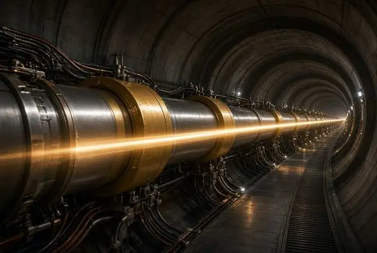

À l'affiche · Live 01
Fusion nucléaire — WEST, EAST, ITER
Le Soleil en boîte. Record CEA. Critère de Lawson.
- Le Soleil tient par la fusion. On essaie de la copier dans une cage magnétique.
- WEST au CEA, EAST en Chine, ITER en construction : trois machines, une même question.
- Le critère de Lawson dit quand le plasma s’entretient.
- Un record de durée n’est pas encore une centrale.